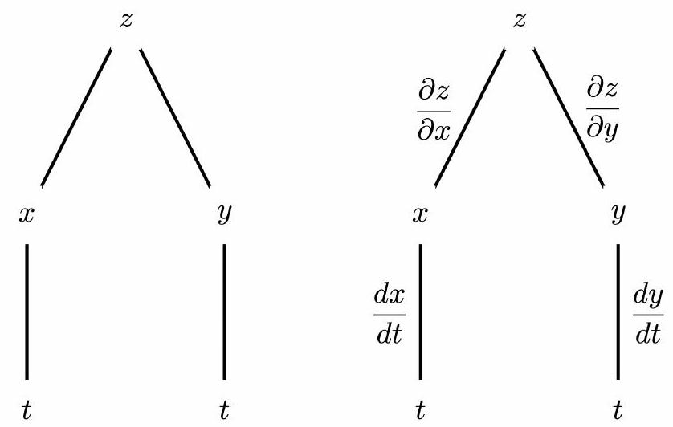

Second Derivatives and Chain Rule
Contents
Second Derivatives and Chain Rule¶
Second Derivatives¶
A function \(f(x, y)\) has four partial derivatives:
\(\left(f_{x}\right)_{x}=f_{x x}=\frac{\partial}{\partial x}\left(\frac{\partial f}{\partial x}\right)=\frac{\partial^{2} f}{\partial x^{2}}\)
\(\left(f_{x}\right)_{y}=f_{x y}=\frac{\partial}{\partial y}\left(\frac{\partial f}{\partial x}\right)=\frac{\partial^{2} f}{\partial y \partial x}\)
\(\left(f_{y}\right)_{x}=f_{y x}=\frac{\partial}{\partial x}\left(\frac{\partial f}{\partial y}\right)=\frac{\partial^{2} f}{\partial x \partial y}\)
\(\left(f_{y}\right)_{y}=f_{y y}=\frac{\partial}{\partial y}\left(\frac{\partial f}{\partial y}\right)=\frac{\partial^{2} f}{\partial y^{2}}\)
Clairaut’s Theorem¶
Let \(f\) be a function of several variables for which the partial derivatives \(f_{x y}\) and \(f_{y x}\) are continuous near the point \((a, b)\). Then $\( f_{x y}(a, b)=f_{y x}(a, b) . \)\( Extensions of Clairaut's theorem apply to higher partial derivatives and to functions of more variables. For example, for \)f(x, y)\( provided all the derivatives are continuous, we also have \)\( f_{x y z}=f_{x z y}=f_{y x z}=f_{y z x}=f_{z x y}=f_{z y x} \)$
The Chain Rule (2 Variables)¶
If \(z=f(x, y)\) where \(x=g(t)\) and \(y=h(t)\), then $\( \frac{d z}{d t}=\frac{\partial z}{\partial x} \frac{d x}{d t}+\frac{\partial z}{\partial y} \frac{d y}{d t} \)$ (provided the derivatives exist).
Tree Diagrams¶
Chain rule can be helpfully represented using a tree diagram.
Note: Note carefully which derivatives are partial derivatives and which are ordinary derivatives.

The Chain Rule (General Version)¶
If \(z=f\left(x_{1}, x_{2}, \ldots, x_{n}\right)\) and \(x_{i}=g\left(t_{1}, t_{2}, \ldots, t_{m}\right)\) then $\( \frac{\partial z}{\partial t_{j}}=\frac{\partial z}{\partial x_{1}} \frac{\partial x_{1}}{\partial t_{j}}+\frac{\partial z}{\partial x_{2}} \frac{\partial x_{2}}{\partial t_{j}}+\ldots+\frac{\partial z}{\partial x_{n}} \frac{\partial x_{n}}{\partial t_{j}} \)$ (provided the derivatives exist).
Implicit Differentiation¶
If \(F(x, y)\) is differentiable and the equation \(F(x, y)=0\) defines \(y\) as a differentiable function of \(x\), then at any point where \(F_{y} \neq 0\), $\( \frac{d y}{d x}=-\frac{\frac{\partial F}{\partial x}}{\frac{\partial F}{\partial y}}=-\frac{F_{x}}{F_{y}} \)$
If \(F(x, y, z)\) is differentiable and \(F(x, y, z)=0\) defines \(z\) as a differentiable function of \(x\) and \(y\), then at any point where \(F_{z} \neq 0\), $\( \frac{\partial z}{\partial x}=-\frac{\frac{\partial F}{\partial x}}{\frac{\partial F}{\partial z}}=-\frac{F_{x}}{F_{z}} \quad \text { and } \quad \frac{\partial z}{\partial y}=-\frac{\frac{\partial F}{\partial y}}{\frac{\partial F}{\partial z}}=-\frac{F_{y}}{F_{z}} . \)$